Baltski ščit
Švedska in Finska; stara uravnava iz predkambrija.
Učenje
Enotna stran za Sever: naravnogeografske značilnosti, družbenogeografske značilnosti, izbrani procesi, problemi in preverjanje.
Švedska in Finska; stara uravnava iz predkambrija.
Pribaltske države; uravnava iz predkambrija, prekrita s sedimenti mlajših obdobij.
Staronagubano gorovje, nastalo s kaledonsko orogenezo.
Vulkanizem zaradi razmikanja Severnoameriške in Evrazijske plošče ter vroče točke.
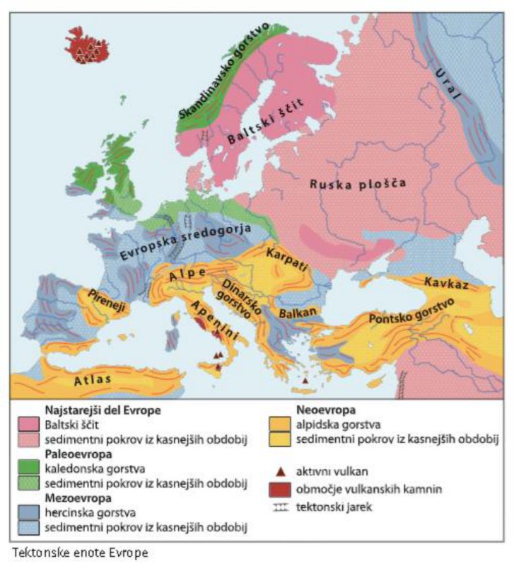
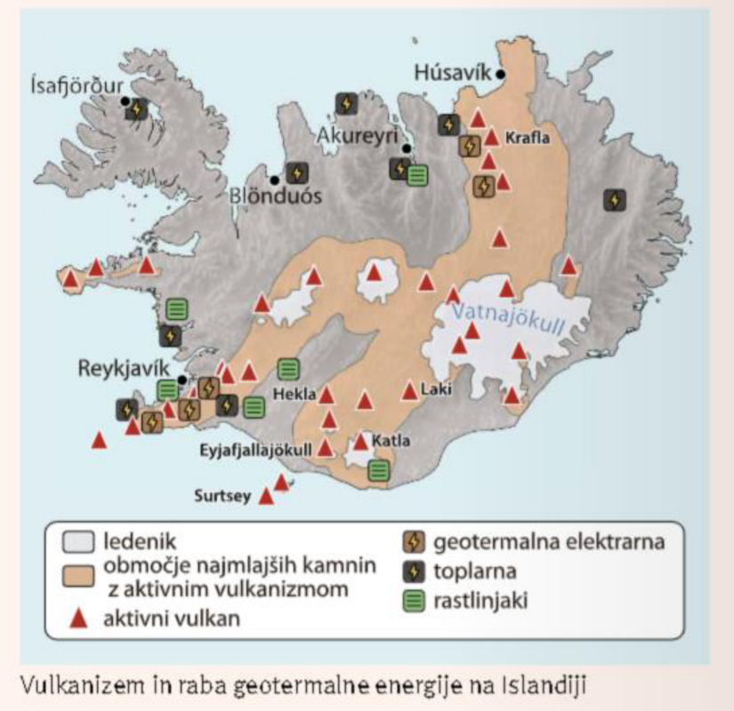
Pri Islandiji poveži vulkanizem z rabo geotermalne energije: elektrarne, toplarne, kopališča, rastlinjaki in gejzirji.
V pleistocenu je bila Severna Evropa območje celinske poledenitve. Led je površje preoblikoval z ledeniško erozijo in akumulacijo. Med poledenitvijo se je površje pogrezalo, po umiku ledenega pokrova pa se dviguje.
| Erozijske oblike | Akumulacijske oblike |
|---|---|
| fjord - ledeniška dolina, ki jo je zalilo morje | morena - nasip kamenja, ki ga odloži ledenik |
| fjell - zbrušeno planotasto površje nad gozdno mejo | ledeniška jezera in pojezerja, zlasti na Finskem |
| grbinasti otočki, npr. Lofoti | zajezitve za morenskimi nasipi |
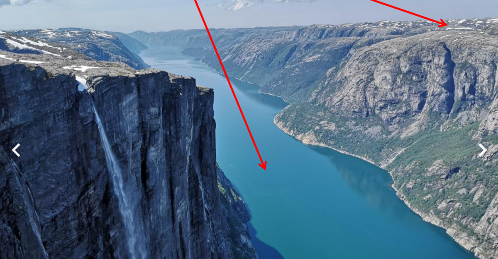
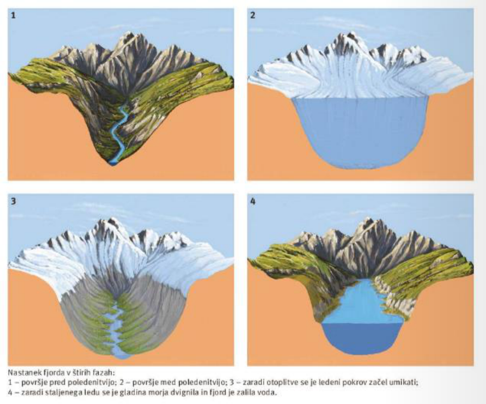
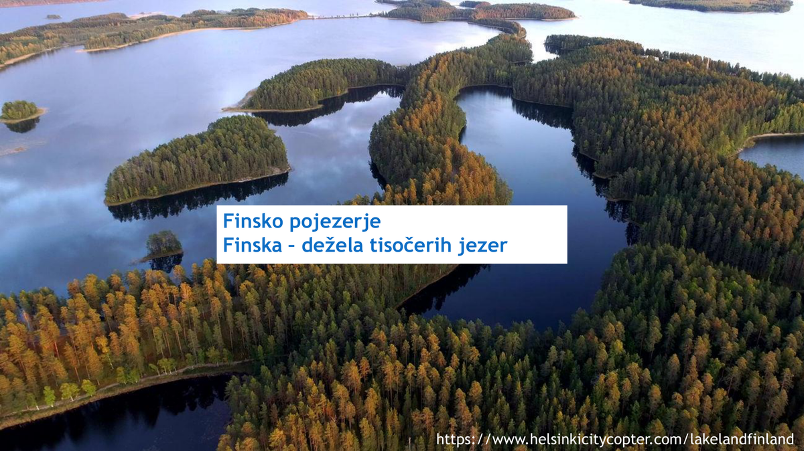
Na podnebje Severne Evrope vplivajo visoka geografska širina, topli Severnoatlantski tok, reliefna pregrada Skandinavskega gorstva in oddaljenost od morja. Proti vzhodu se povečuje kontinentalnost: padavin je manj, temperaturne razlike med poletjem in zimo pa naraščajo.
| Podnebni tip | Rastlinstvo | Prsti / območje |
|---|---|---|
| oceansko | listnati in mešani gozdovi | kambisoli |
| kontinentalno vlažno | listnati in mešani gozdovi | kambisoli in grejzjomi |
| zmerno hladno | iglasti gozdovi | podzoli |
| gorsko | gorsko rastlinstvo | gorske prsti |
| tundrsko | tundrsko rastlinstvo | tundrske prsti |

Če razlagaš razliko zahod-vzhod v Severni Evropi, vedno uporabi tri besede: Atlantik, Skandinavsko gorovje, kontinentalnost.
Redka; najgostejša na jugu. Severnoatlantski tok omogoča poselitev obalnega pasu Norveške, gorati relief pa poselitev ovira.
Dobre možnosti predvsem na Danskem; pomembna živinoreja. Na severu iglasti gozdovi podpirajo gozdarstvo in predelavo lesa.
Ovire so Skandinavsko gorovje, fjordi, morja in ožine. Zato so pomembni mostovi, trajekti in železniški projekti.
Večinoma domači turizem; mednarodno privlačni so fjordi, prestolnice in Nordkap.
Nordijske države povezuje model razvoja, ki temelji na visoki gospodarski razvitosti, demokraciji, človekovih pravicah, zaupanju v institucije, nizki koruptivnosti, enakomernejši razdelitvi bogastva in visokih vlaganjih v zdravstvo, šolstvo ter socialne službe. Visoki davki omogočajo socialno državo oziroma državo blaginje.
Nordijske države niso isto kot Skandinavija. V šolskem gradivu k Severni Evropi spadajo tudi pribaltske države.
Nordijske države imajo med najnižjimi deleži energetske odvisnosti v EU, Norveška pa je samooskrbna in več energije izvozi kot porabi. Delež končne porabe energije iz obnovljivih virov je v nordijskih državah v evropskem vrhu, nad povprečjem EU so tudi pribaltske države.
| Država / skupina | Pomemben vir elektrike | Vzrok |
|---|---|---|
| Islandija | hidroenergija in geotermalna energija | ledeniki, vulkanizem, vroča točka |
| Norveška, Švedska | hidroenergija | Skandinavsko gorovje, velik strmec in pretok rek |
| Finska | jedrska energija | energetska politika in potreba po zanesljivi elektriki |
| Danska, Litva | vetrna energija | dobra prevetrenost |
| Latvija | zemeljski plin | energetska struktura |
| Estonija | premog / oljni skrilavec | domači viri |
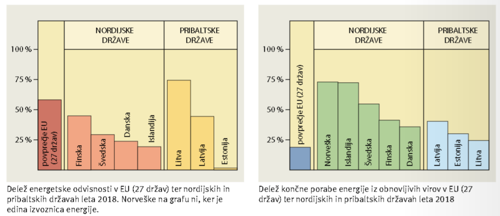
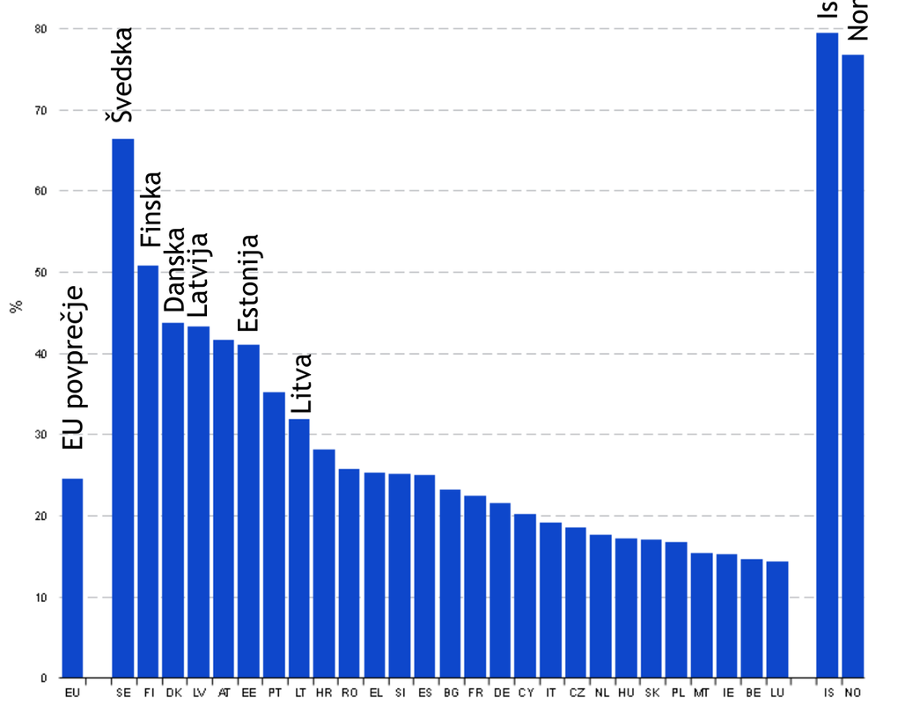
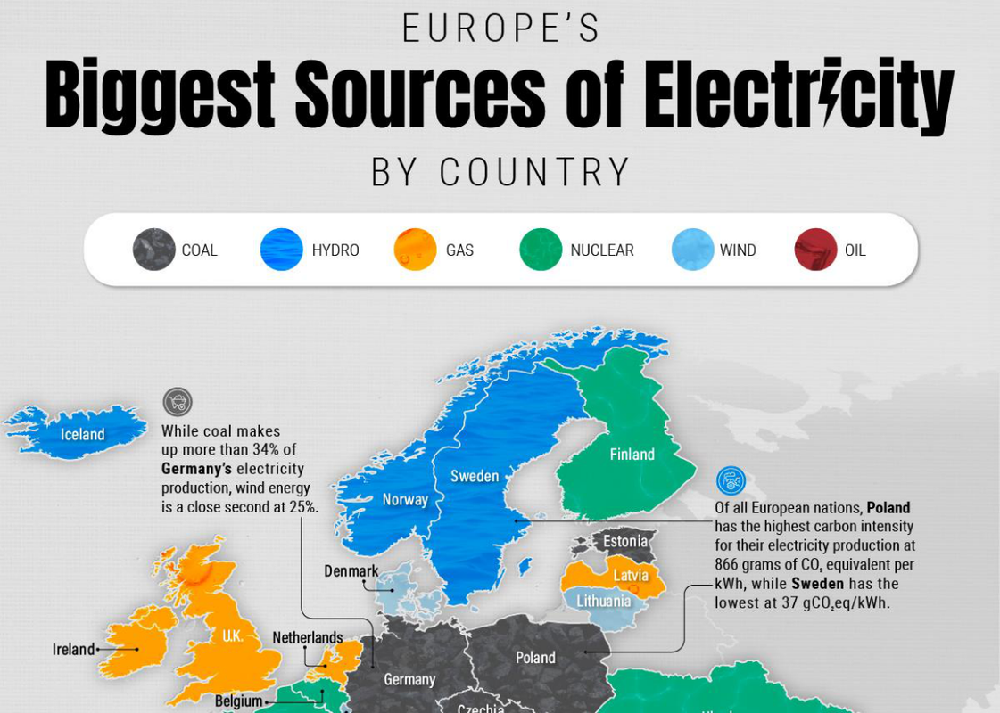
Fosilna goriva so po 70. letih 20. stoletja postala osnova močnega gospodarskega razvoja. Glavne zaloge so v Severnem morju, ki je šelfno in zato ugodno za črpanje. Norveška ni v EU in ni članica OPEC-a.
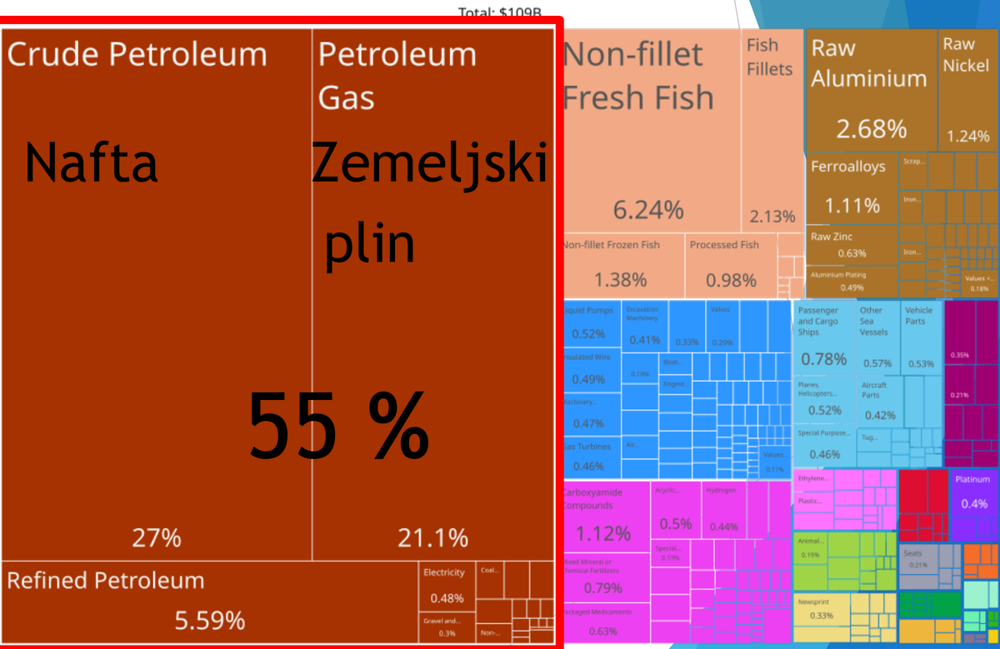
Severna Evropa ima veliko naravnih prometnih ovir: morja, ožine, fjordi in Skandinavsko gorovje. Zato so pomembne velike infrastrukturne povezave.
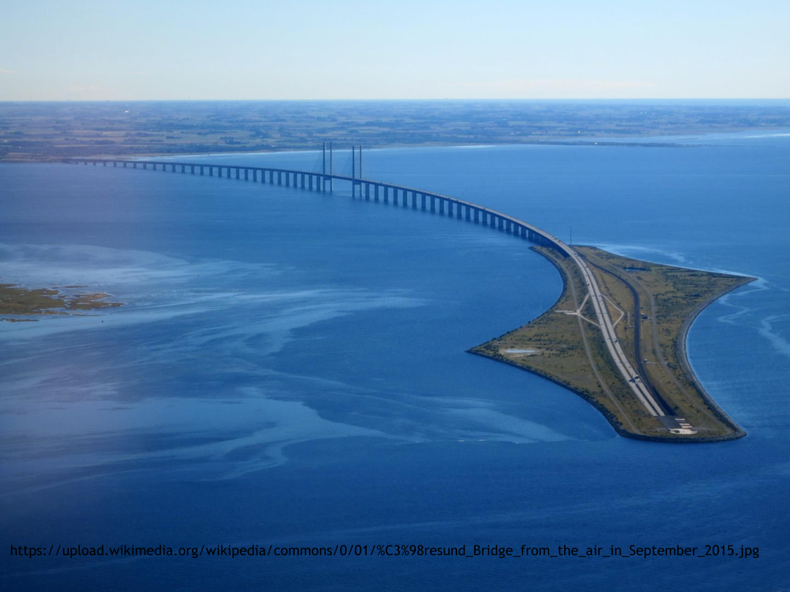

Rail Baltica je projekt hitre železniške povezave pribaltskih držav s Poljsko. Ker povezuje Baltik z evropskim železniškim omrežjem, je pomemben za prometno, gospodarsko in geopolitično povezanost regije.
Glavni vzrok so strupene žveplove in dušikove spojine iz drugih delov Evrope, predvsem iz Velike Britanije. Problem poslabša silikatna kamninska podlaga, ki vsebuje malo kalcija in zato slabše nevtralizira kisline. Posledice so večja kislost jezer, rek in barij, umiranje rib in iglastih gozdov.
| Vzroki | Posledice | Rešitve |
|---|---|---|
| SOx in NOx iz drugih delov Evrope | kislost jezer in rek, umiranje rib | zmanjšanje emisij |
| silikatna podlaga z malo kalcija | umiranje iglastih gozdov | apnenje jezer |
| čezmejni prenos onesnaženja | problem ni omejen le na eno državo | mednarodni dogovori |
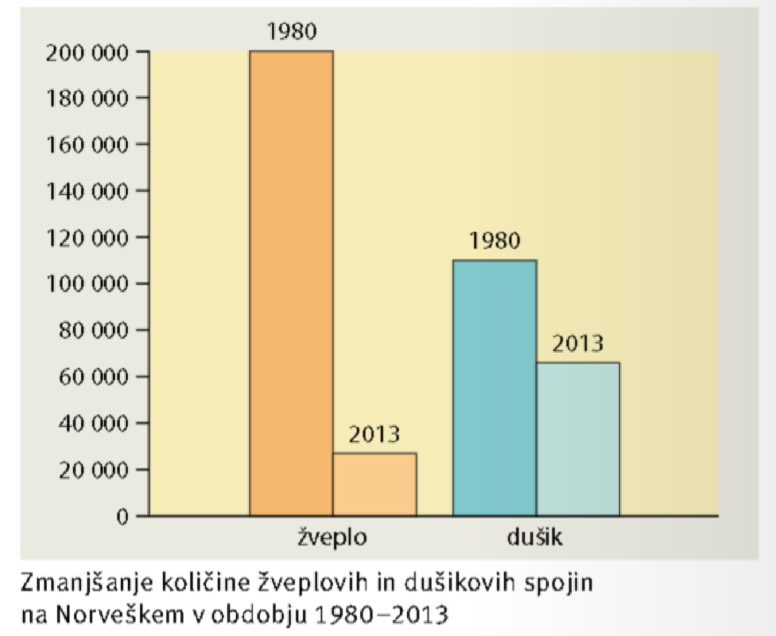
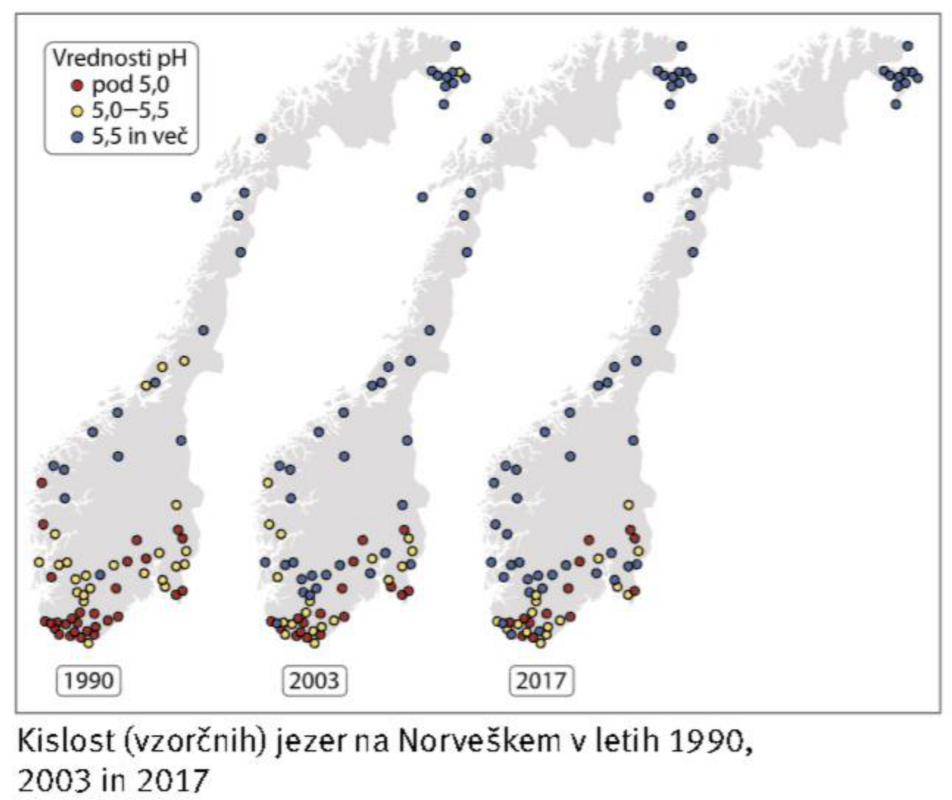
V preteklosti je bilo ribištvo osnova preživetja in poselitve obalnega pasu. Danes sta Norveška in Islandija vodilni državi po ulovu v Severnem Atlantiku, večino ulovljenih in gojenih rib izvozita. Zaradi prelova so uvedli ribolovne kvote, na Norveškem pa se je močno razvilo ribogojstvo.
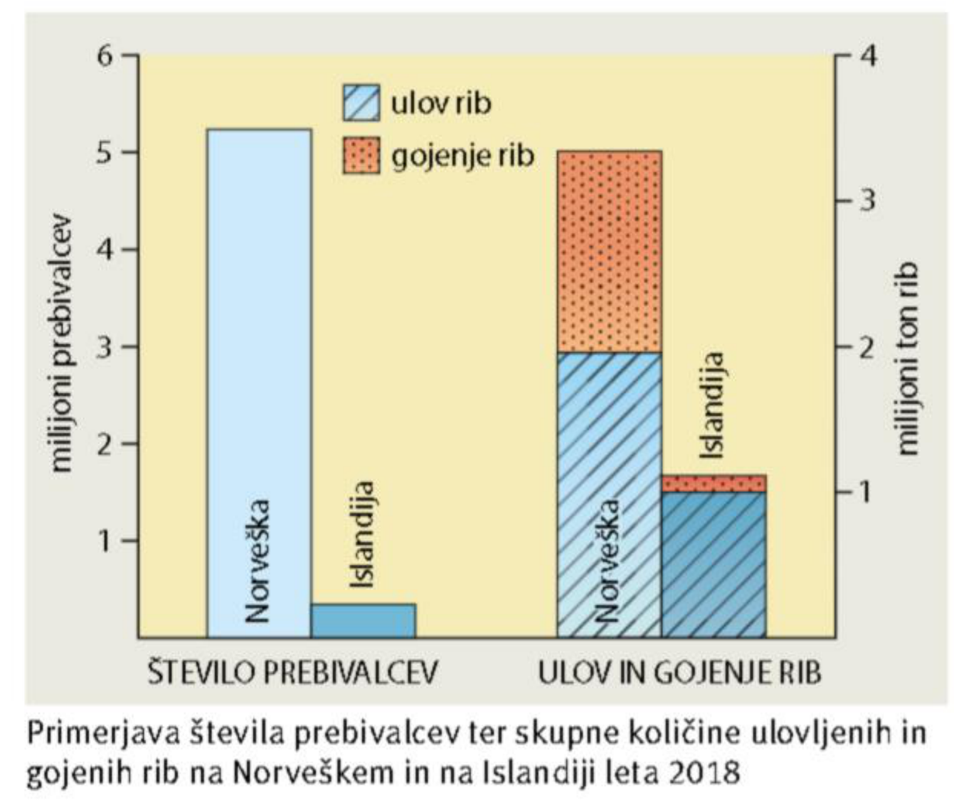
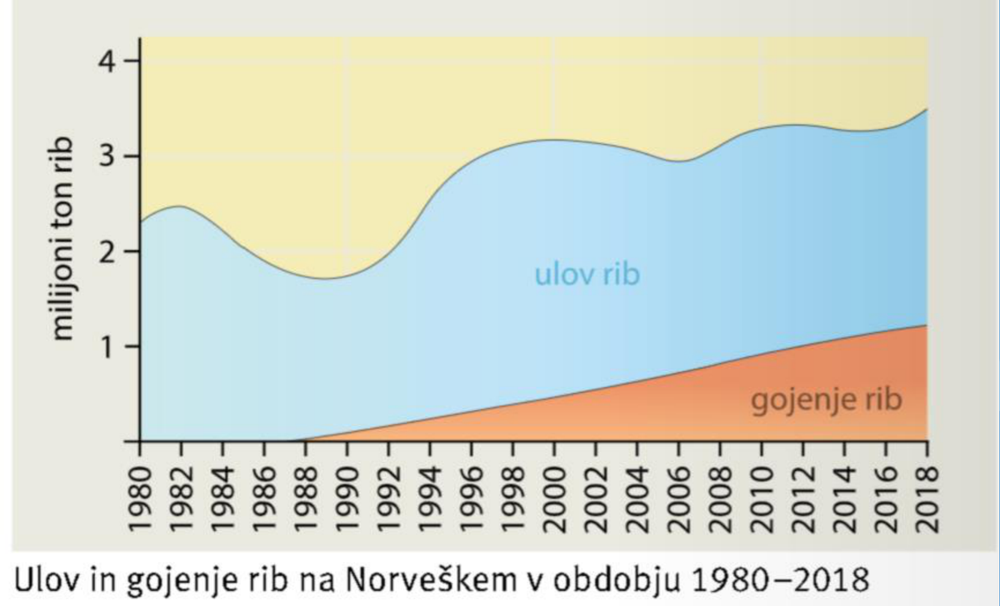
Finska je najbolj gozdnata država Evrope; približno tri četrtine površja pokrivajo gozdovi. Najbolj izkoriščana sta bor in smreka. Gozd je osnova za lesnopredelovalno industrijo, proizvodnjo mehanizacije, strojev, svetovanje in prodajo.
Severna Evropa zaradi visokih vlaganj v znanje in stabilnih institucij razvija visokotehnološke panoge. Kmetijstvo je najbolj ugodno na Danskem, kjer je pomembna živinoreja; severneje so možnosti omejene zaradi podnebja in kratke vegetacijske dobe.
Litva, Latvija in Estonija so bile del Sovjetske zveze od 1941 do 1991. Kulturno, jezikovno in versko se razlikujejo od večine nekdanje SZ: Litva je večinsko katoliška, Latvija in Estonija imata močno protestantsko tradicijo in tudi pravoslavno prebivalstvo. Litovščina in latvijščina sta baltska jezika, estonščina pa je ugrofinski jezik.
V času SZ so pribaltska mesta industrializirali z rusko govorečimi delavci; proces je bil najmočnejši v Latviji in najšibkejši v Litvi.
Litva ga je po osamosvojitvi podelila vsem, Latvija in Estonija pa le priseljenim pred letom 1940; drugi so morali skozi naturalizacijo.
Izseljevanje po osamosvojitvi, vstopu v EU in finančni krizi, nizki naravni prirast, hitro upadanje prebivalstva.
Prehod v tržno gospodarstvo je bil boleč, a države so se pozneje močno vključile v EU.
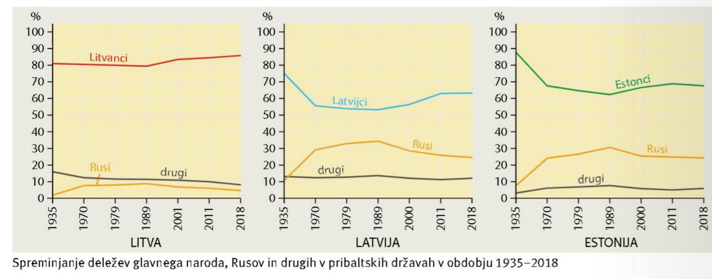
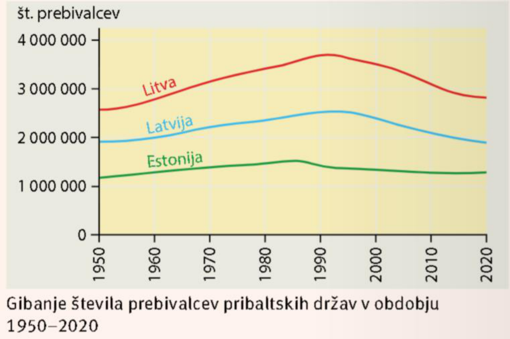
Pojasni nastanek fjorda in navedi, kje je značilen.
Fjord nastane, ko ledenik z erozijo poglobi dolino, po umiku ledu pa jo zalije morje. Značilen je za norveško obalo, kjer ustvarja zelo razčlenjeno obalo, prometne ovire in pomembno turistično pokrajino.
Zakaj ima Norveška ugodne možnosti za hidroenergijo in izvoz fosilnih goriv?
Hidroenergijo omogočajo Skandinavsko gorovje, velik strmec in pretok rek. Izvoz fosilnih goriv pa temelji na nafti in zemeljskem plinu, zlasti iz Severnega morja, ki je šelfno in zato ugodno za črpanje.
Hladno podnebje, fjordi, gorovja in velika oddaljenost povečujejo stroške prometa in poselitve, hkrati pa ustvarjajo posebne razvojne možnosti: hidroenergijo, geotermalno energijo, ribištvo, gozdarstvo in turizem v fjordih.
Pribaltske države so gospodarsko povezane z EU, a zaradi zgodovine, lege ob Rusiji in prometne preusmeritve proti zahodu ostajajo dober primer, kako se družbenogeografske značilnosti povezujejo z geopolitiko.
Pri Rail Baltici si zapomni predvsem namen: povezati Estonijo, Latvijo in Litvo s Poljsko ter evropskim železniškim sistemom. To ni samo prometni projekt, ampak tudi projekt gospodarskega in političnega povezovanja.
Pri Severni Evropi je dobro razlagati kontrast: naravno zahtevno okolje, vendar visoka gospodarska razvitost zaradi znanja, institucij, energetskih virov in vključevanja v evropske povezave.
Viri dopolnitve: Rail Baltica, uradne strani EU o TEN-T, Encyclopaedia Britannica.
Klikni kartico, da obrneš odgovor. Te kartice so dodane neposredno na konec teme za hitro ponavljanje.
Osnovna snov je povzeta iz predstavitev 022-025. Rail Baltica je dodatno pojasnjena kot prometno-gospodarski projekt, ker je v predstavitvi omenjena zelo na kratko. Dopolnitve so označene kot "Dodano za razumevanje" in so povzete iz preverjenih virov: Eurostat, European Environment Agency, Encyclopaedia Britannica, uradne strani EU in drugi preverjeni viri.